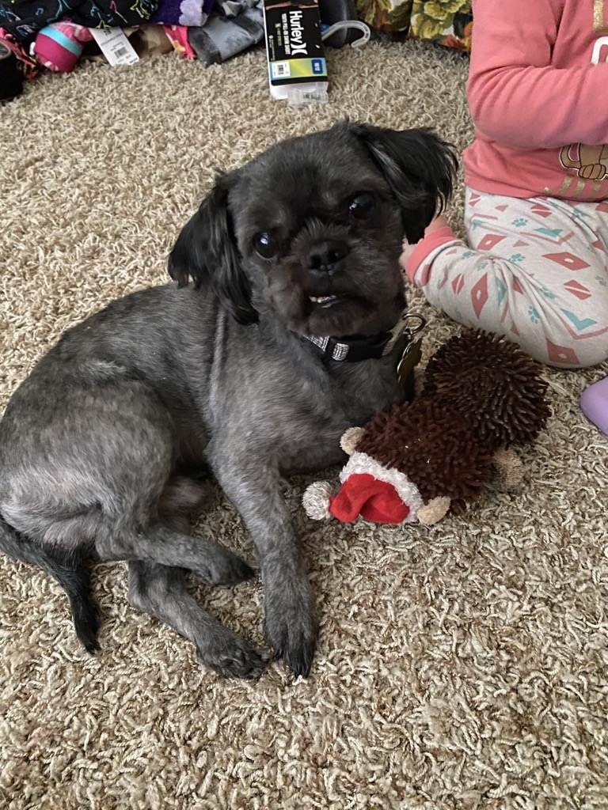
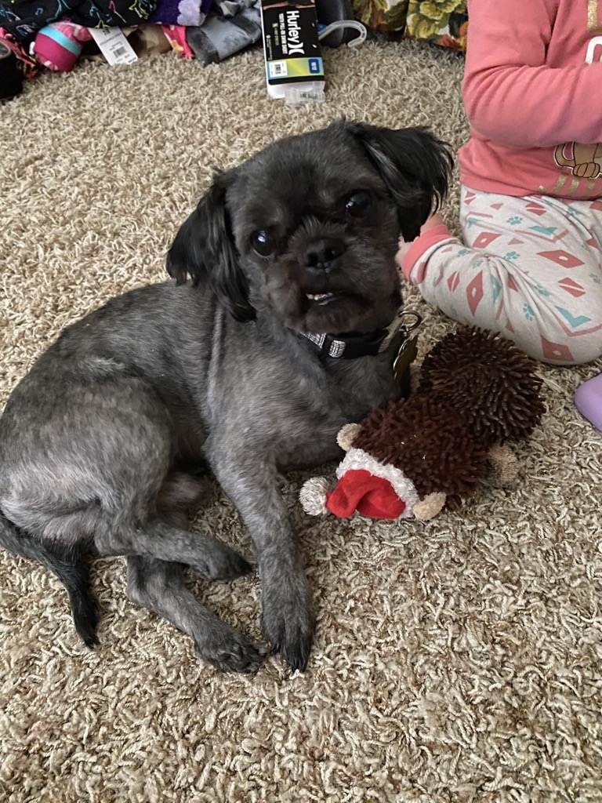

About Me

 

My Name is Elise Phelps. I am currently working as a Receptionist at 1-800 Contacts. I found out about tech-moms through a previous tech-mom alumni and helped her with the buddy study in March. Looking into the future I would like to create my own site selling the glass cups like the one in my Hobbies tab. I have been married to my wonderful husband Cameron for 12 years this past September. We have 3 human kiddos and a furry kiddo. Our oldest is in 5th grade, he loves Math and Science. Our middle child is in 2nd grade, she loves to play with friends and always outside playing. Our baby just started preschool at school for the Deaf and Blind in October. She loves her daddy and is very much a threen-ager. Our puppy is a purebred Shih Tzu. He is 5 years old. His name is Riley but we call him zoomy. Especially after a bath.